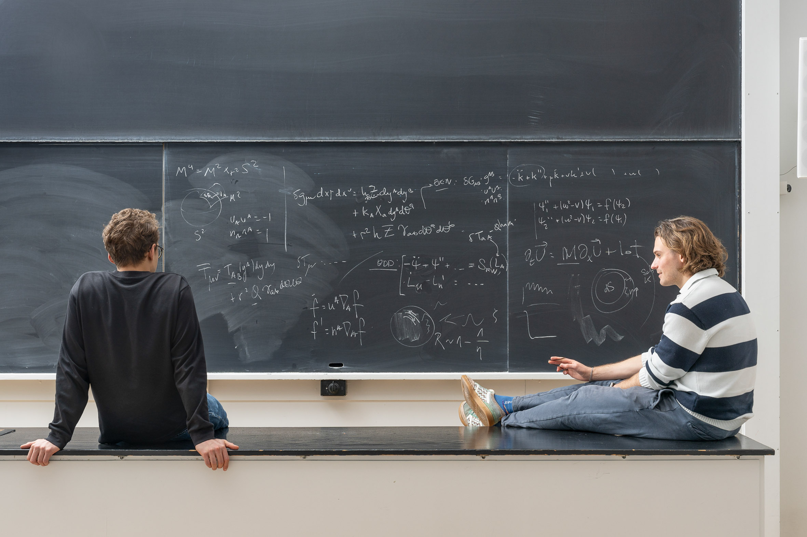

I am a PhD student studying black hole physics through perturbation theory. I am drawn towards turbulent phenomena.
When I'm not working, I enjoy climbing, running, dancing salsa, watching the newest art exhibition, or most likely at some bakery. Check out the the Gallery for some photos I took!
I am currently based at the Niels Bohr Institute, in Copenhagen. Before that I escaped from canadian geese in Waterloo, I sang Wonderwall one too many times (twice) in Manchester, and I grew up in Madrid, which I pronounce Madriz.
Music
Books
Movies
Here are some albums that I enjoy lately:
- Canciones en mi, by delightful Pablo Pablo.
- Piano Concerto in G Major, Gaspard de la Nuite, Sonatine, by Ravel, played by Martha Argerich and conducted by Claudio Abbado.
- Sacromonte, by Enrique Morente. It's not so often that I find so much joy in a flamenco album.
- Marianne Faithfull: the Montreaux Years, really is there anything better this woman's raspy voice?
Here are some books that I've read recently:
- 1Q84 (H. Murakami) - Currently devouring this series. Stay tuned!
- The vegetarian (H. Kang) - I was somewhat disappointed. The first third was disturbing in a marvelous way, the remaining two thirds was just disturbing.
- Viaje a la Alcarria (C.J. Cela) - Boredom as a virtue, nothing happening as the biggest adventure.
- What do I talk about when I talk about running (H. Murakami) - Yes, I am getting into long-distance running. And into Murakami. Independently?
- Hitchcock/Truffaut (F.Truffaut) - Made me look at movies in a different way.
Here are a some of the last movies I have watched. Find me on Letterboxd for up to date information!
- El bosque animado (J. Luis Cuerda) - Evocative, suggestive, poetic, tragi-comedy at its best.
- Materialists (C. Song) - I was quite disappointed by this one, not gonna lie.
- My dinner with Andre (L. Malle) - So interesting that I literally could not sleep after watching it.
- Z (A. Costa-Gavras) - Masterful story-telling. Also I know nothing about Greece.